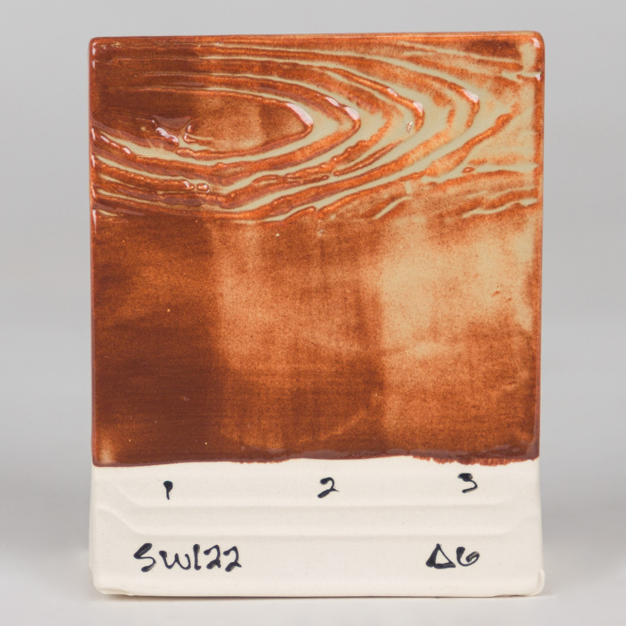
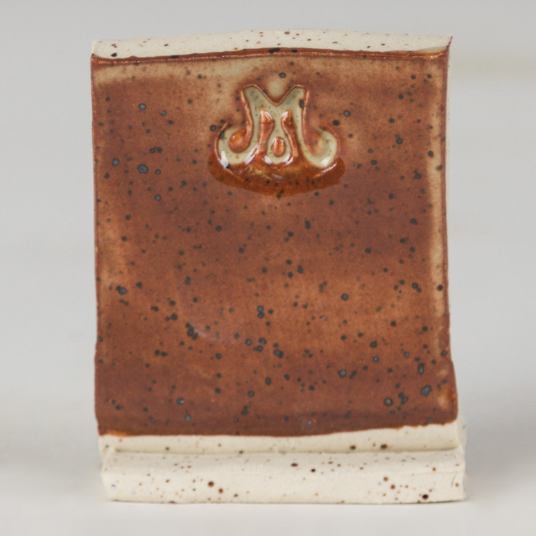
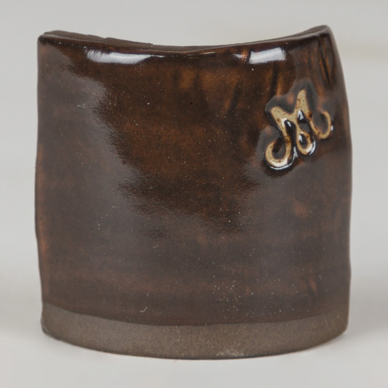
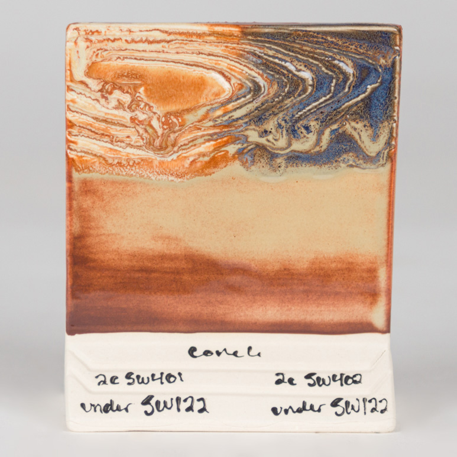

Commercial
Mayco SW-122 Maycoshino
A commercial iron glaze that shifts from rich brown to creamier shino-like color as thickness increases.
Mayco
Stoneware
Cone 6
Effect
Finish tags: iron, variegated, shino-like
Effect tags: brown-break, cream-over-brown, thickness-responsive
Atmosphere: oxidation
Use Notes
Application: Mayco notes that one coat gives a solid reddish brown opaque covering, two coats give a cream-tan-buff finish that breaks brown over texture, and three coats introduce waves of cream-tan color over the brown base.
Food safe: Not specified
Sources: mayco-maycoshino, mayco-glaze-combinations





Notes
This is a strong commercial analog to some of the DIY iron-rich fake-atmospheric glazes because thickness matters visibly.
- Good test candidate on both smooth and carved surfaces.
- Worth pairing later with Micro Ash in the commercial comparison track.
- The official gallery now attached here shows thickness response, clay-body response, and a flux-layered example.